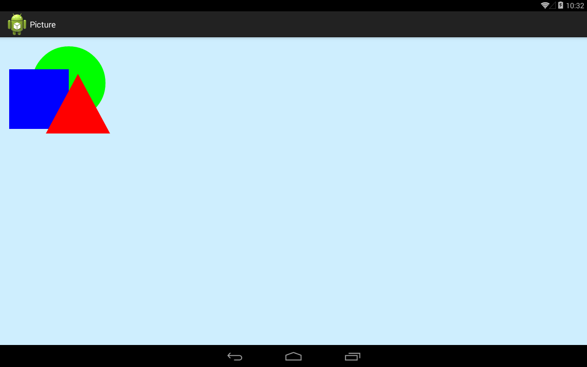
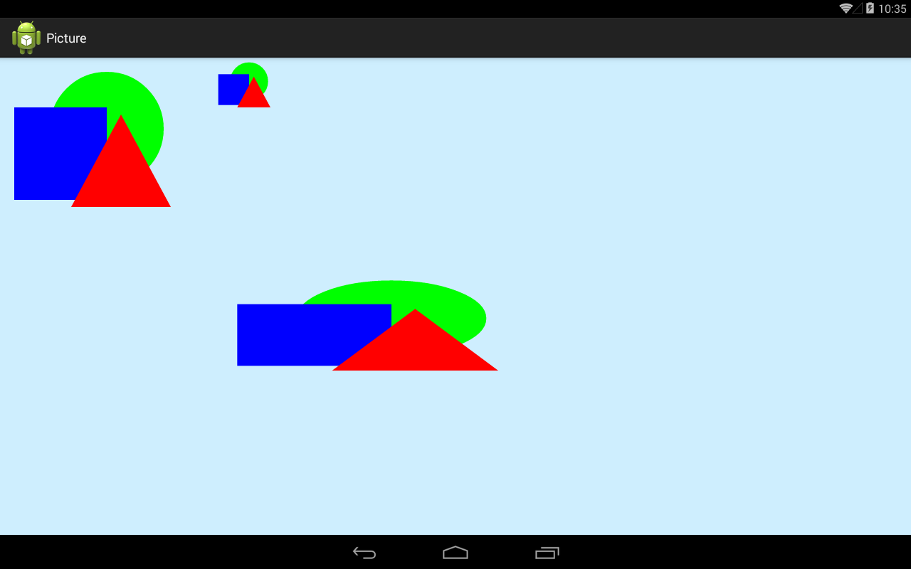

В этом уроке:
- работаем с Picture
Мы можем записать операции рисования на канве в некий шаблон, а затем многократно воспроизводить его. Для этого используется объект Picture.
Создадим проект:
Project name: P1521_Picture
Build Target: Android 4.0
Application name: Picture
Package name: ru.startandroid.develop.p1521picture
Create Activity: MainActivity
В манифесте для Activity необходимо прописать такую строку
android:hardwareAccelerated="false"
Без нее не будет работать.
MainActivity.java:
package ru.startandroid.develop.p1521picture;
import android.app.Activity;
import android.content.Context;
import android.graphics.Canvas;
import android.graphics.Color;
import android.graphics.Paint;
import android.graphics.Path;
import android.graphics.Picture;
import android.os.Bundle;
import android.view.View;
public class MainActivity extends Activity {
@Override
protected void onCreate(Bundle savedInstanceState) {
super.onCreate(savedInstanceState);
setContentView(new DrawView(this));
}
class DrawView extends View {
Paint p;
Path path;
Picture picture;
public DrawView(Context context) {
super(context);
p = new Paint(Paint.ANTI_ALIAS_FLAG);
picture = new Picture();
Canvas canvas = picture.beginRecording(300, 300);
p.setColor(Color.GREEN);
canvas.drawCircle(150, 100, 80, p);
p.setColor(Color.BLUE);
canvas.drawRect(20, 70, 150, 200, p);
p.setColor(Color.RED);
path = new Path();
path.moveTo(170,80);
path.lineTo(240, 210);
path.lineTo(100, 210);
path.close();
canvas.drawPath(path, p);
picture.endRecording();
}
@Override
protected void onDraw(Canvas canvas) {
canvas.drawARGB(80, 102, 204, 255);
canvas.drawPicture(picture);
}
}
}Сначала создаем объект Picture, затем методом beginRecording начинаем запись. Этот метод возвращает нам канву, на ней мы и будем выполнять все операции, которые будут записаны. А на вход методу beginRecording необходимо передать ширину и высоту изображения, которое вы собираетесь записывать. Т.е. наш шаблон будет размером 300х300.
Записываем рисование круга, квадрата и треугольника, и затем, методом endRecording, завершаем запись.
В onDraw методом drawPicture выводим на нашу канву все то, что записали в picture.
Результат:

Отобразились все наши записанные действия.
У drawPicture есть, также, реализация, где мы можем менять размер выводимого изображения.
Перепишем класс DrawView:
class DrawView extends View {
Paint p;
Path path;
Picture picture;
Rect rect;
Rect rect1;
public DrawView(Context context) {
super(context);
rect = new Rect(0, 0, 100, 100);
rect1 = new Rect(0, 0, 500, 200);
p = new Paint(Paint.ANTI_ALIAS_FLAG);
picture = new Picture();
Canvas canvas = picture.beginRecording(300, 300);
p.setColor(Color.GREEN);
canvas.drawCircle(150, 100, 80, p);
p.setColor(Color.BLUE);
canvas.drawRect(20, 70, 150, 200, p);
p.setColor(Color.RED);
path = new Path();
path.moveTo(170, 80);
path.lineTo(240, 210);
path.lineTo(100, 210);
path.close();
canvas.drawPath(path, p);
picture.endRecording();
}
@Override
protected void onDraw(Canvas canvas) {
canvas.drawARGB(80, 102, 204, 255);
canvas.drawPicture(picture);
canvas.translate(300, 0);
canvas.drawPicture(picture, rect);
canvas.translate(0, 300);
canvas.drawPicture(picture, rect1);
}
}В onDraw мы один раз выводим шаблон без изменений, а затем пару раз с указанием областей. Объектами rect и rect1 мы задаем размеры этих областей, и в эти размеры будет смасштабировано изображение
Результат:

Т.е. кроме оригинала мы вывели то же изображение в размерах 100х100 и 500х200 и наш шаблон подстроился под эти размеры.
У picture есть метод draw, который делает то же, что и canvas.drawPicture. Но метод канвы (drawPicture) сохраняет состояние канвы перед выводом picture, а затем восстанавливает его (о состояниях канвы можно прочесть в Уроке 146).
Если верить документацие, то воспроизведение Picture может дать прибавку к скорости, по сравнению с вызовом методов канвы напрямую.